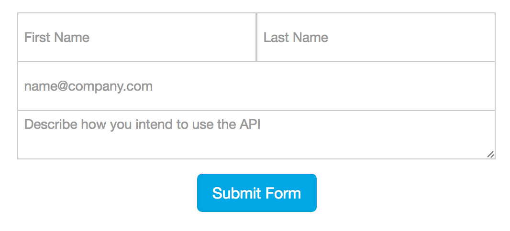
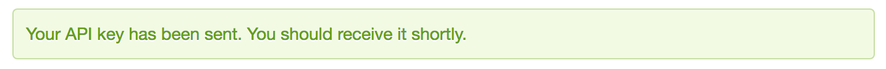

- API Intro
- API Key
- Stuff
- More Stuff
- Last Stuff
The National Park Service function as an agency of the US government. This agency is most commonly associated with its role in managing the nation's 59 national parks. These parks, each magnificent in its own way, draw thousands to millions of visitors each year. With so much interest, a convenient way to store data about these parks was much needed, hence the NPS Data API. This API stores important information about each national park ranging from campground availability, current park alerts, and visitor center locations.
The internet has made finding information, about any and everything, incredibly easy. In fact, people have more information at their fingertips now than at any point in history. Generally, this information is found by utilizing a search engine or browsings a website. But websites also provide information in ways that not nearly as many people know about.
Utilizing what is known as an Application Programming Interface, or API for short, users can access troves of data that's othewise hidden to the naked eye. This is done by calling specific methods established by the website which allows this data to be retreived from their web servers. In this manner, we will utilize the National Park Services Data API to fetch data from their servers!
If you visit the official National Park Services Data API page the first thing you will notice is a form to be filled out. This will provide you with an API key which will be used when making requests to their server. But why exactly is this necessary?
First, the server needs to regulate the number and frequency of requests being made to it. Too many requests, or request coming too frequently may result in adverse performance of the server. It is recommended that no more than 5 requests are made per second, or more than 1,000 requests are made per day.
Additionally, this key is linked to your idenity based on whatever you included in the form. If the API is used for malicious purposes, then it will be clear which key it is coming from.
With these things in mind, go ahead and fill out the form when you are ready! Once completed, click submit and you should see the following confirmation message:
Now check your email to make sure you received your key!